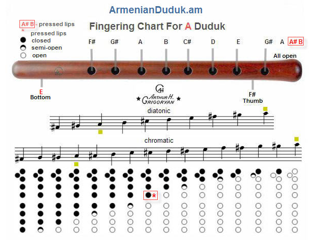

Armenian Duduk, Bass Duduk, Zurna, Reed, Shvi Made by Arthur H. Grigoryan -GHA-
About Duduk and The Armenian Duduk-Players
Among the Armenian national instruments duduk has a place of honour. It is not a mere instrument. Every listener feels it in his own way. Duduk has soul and feelings in itself.It is a unified symphony of human spirits. Duduk is the breath of life to every Armenian. While listening to the sweet tunes of the duduk one is charmed to see in his mind's eye our native land of high mountains, fertile valleys, azure sky, dazzling sun, transparent lakes and turbulent streams.
The Armenian duduk is a very simple and organic instrument, and it allows for a great deal of individual expression. To begin, it requires a great deal of breath, so proper posture and being relaxed is important. The breath control is exactly like that of a singer, or an actor, in that you should breath from your diaphragm, and not your chest.Do not slouch, or bow your head, this will only block your breath/energy and make you work even harder to play the instrument! The reed, while being quite large, only gets played at the very end, with only 1/4" to 1/2" being inserted into your mouth.
